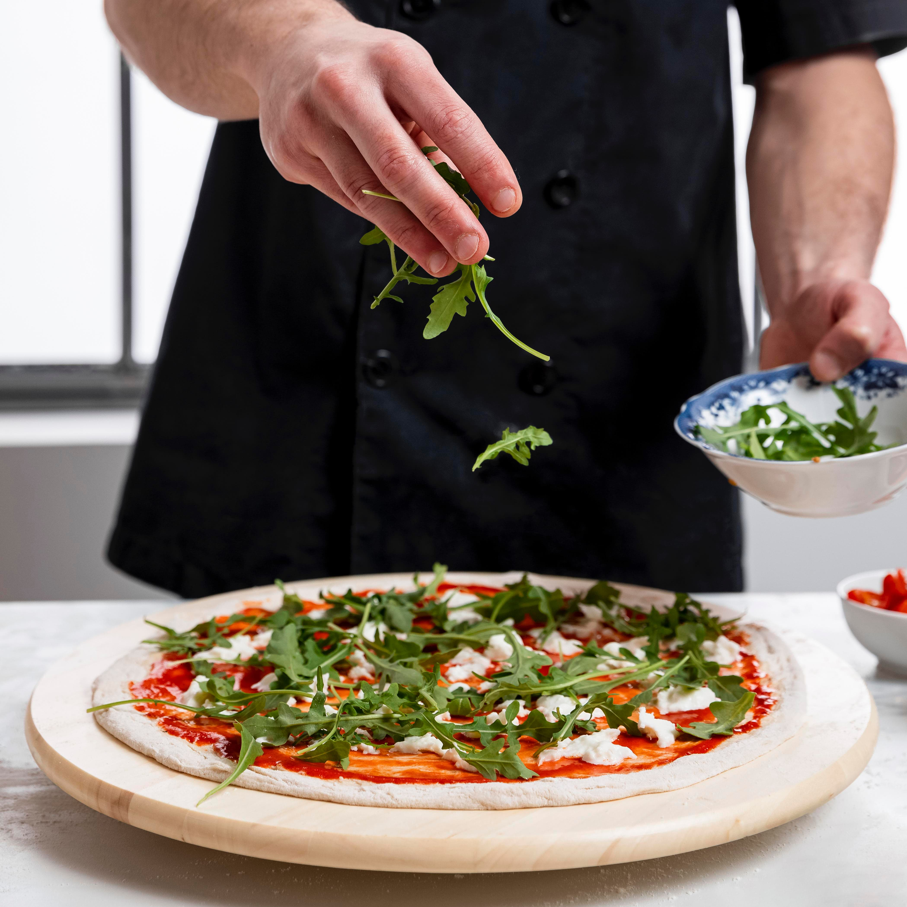

Заповніть будь-ласка цю форму і ми Вам перетелефонуємо напротязі 15 хв
Піцерія
Знаєш що замовити, натискай на кнопку і ми тобі зателефонуємо. Або переходь до меню
Про нас
Якщо ви плануєте приємно провести вихідний з родиною, наша піцерія просто ідеальний варіант, куди можна прийти з дітками. Молодь просто обожнює піцу, у нас вас чекають смачні страви, приємна атмосфера, кращого варіанта для зустрічі з друзями і не придумаєш. Якщо ви зголодніли і хочете перекусити в перерву або думаєте що б смачненьке з'їсти після важкого трудового дня, завітайте до нас, смачна піца, затишна атмосфера, ввічливий персонал додадуть вашому відпочинку приємних відчуттів. Яскравий вигляд піци стане окрасою будь-якого столу. Якщо ви хочете взяти піцу з собою, щоб насолодитися нею в затишній домашній атмосфері, то ми маємо для цього спеціальну картонну упаковку, яка зручна для транспортування, екологічно безпечна. Головний секрет смачної піци полягає звісно в якісних інгредієнтах. А як зробити з них ідеальне поєднання, яке створить неперевершений смак, вигляд, які не залишать байдужими жодного клієнта, це вже секрет нашого кухара. Взагалі порахувати скільки існує рецептів піци просто неможливо. В залежності від регіональних смакових вподобань та традицій, до складу піци можуть входити такі незвичні інгредієнти, як маринований імбир, морепродукти, зелений горошок, кокос та інше. Лише справжні професіонал знає, які інгредієнти зроблять піцу смачною.
